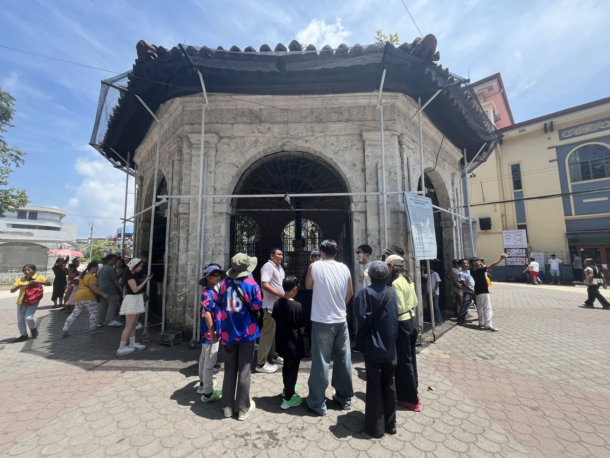
CULTURE ・ 文化
祈りと手仕事の文化にふれる
- 7つの教会をめぐる「ビシタ・イグレシア」
- イースター夜明けの伝統行事「スガット・カバンハワン」
- 手織り布ヒナブロンの工房で機織り体験
- マゼランクロスとサント・ニーニョ教会
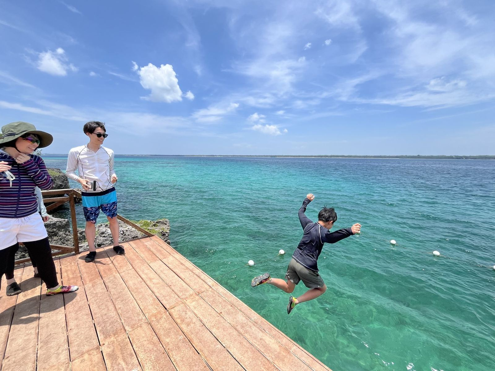
5年目を迎えるMALスタディツアー。2027年の春はセブ島の南部をめぐります。日程はフィリピンでいちばん大切な聖週間(ホーリーウィーク)とイースターに重なります。祈りの文化にふれ、農園で汗をかき、ジンベエザメと泳ぎ、現地校のバディと友達になる。五感をぜんぶ使って、自分のアタリマエを飛び出す8日間です。

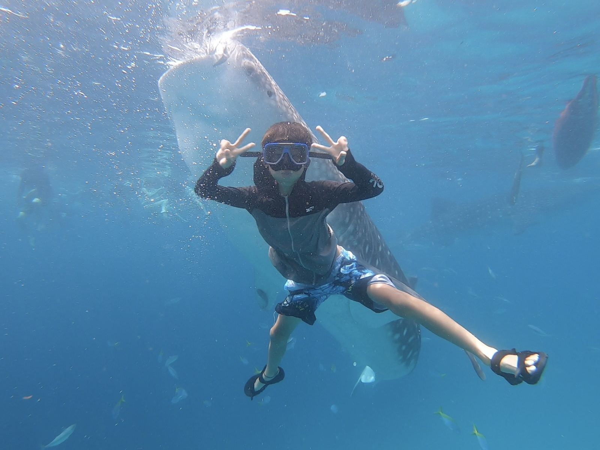
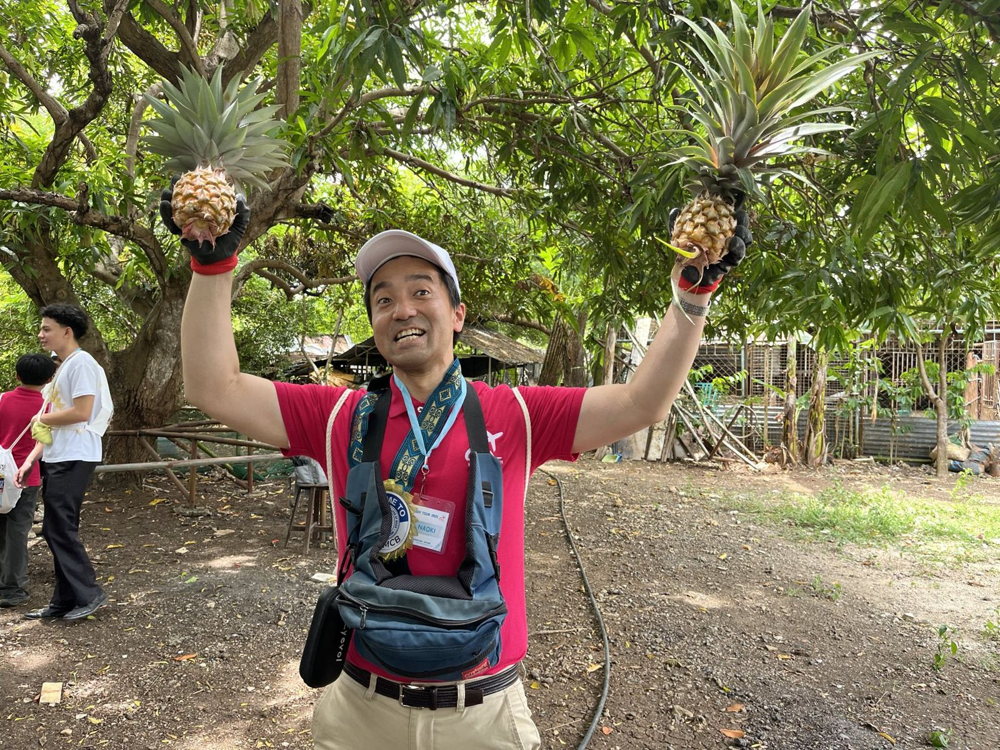
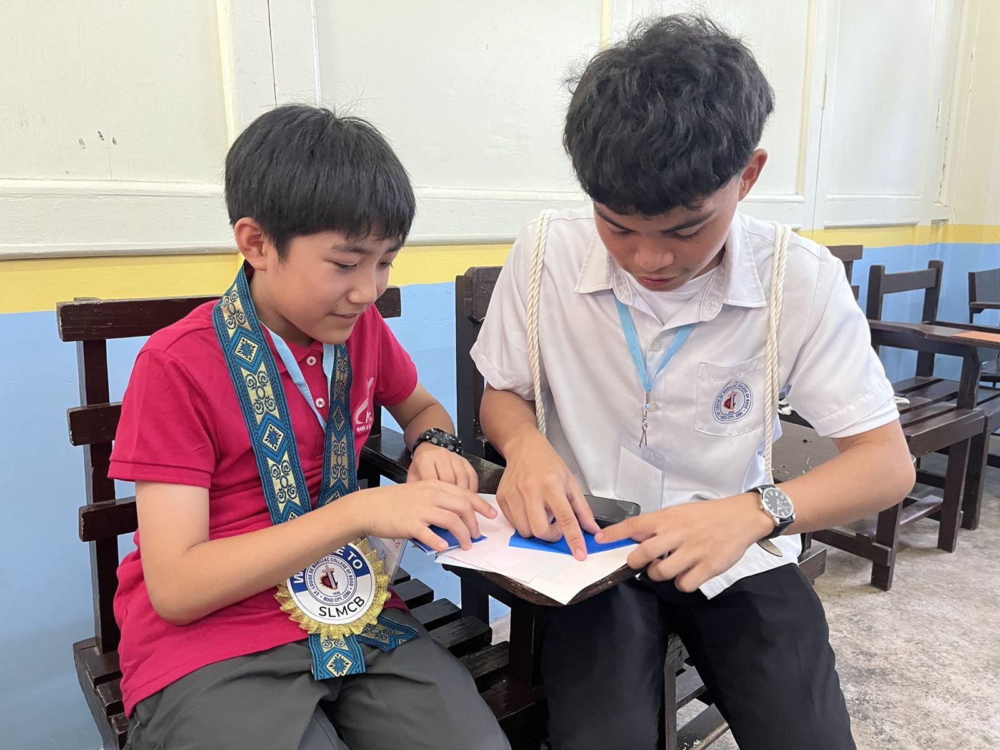
国民の多くがカトリックのフィリピンでは、イースター前の「聖週間」は家族と祈りの時間。町じゅうが特別な空気に包まれます。夜明け前に始まる伝統行事「スガット・カバンハワン」を見に行くのは、この時期だけの体験です。
信仰を持っていなくても大丈夫。異なる文化を「知る・感じる」ことが目的です。
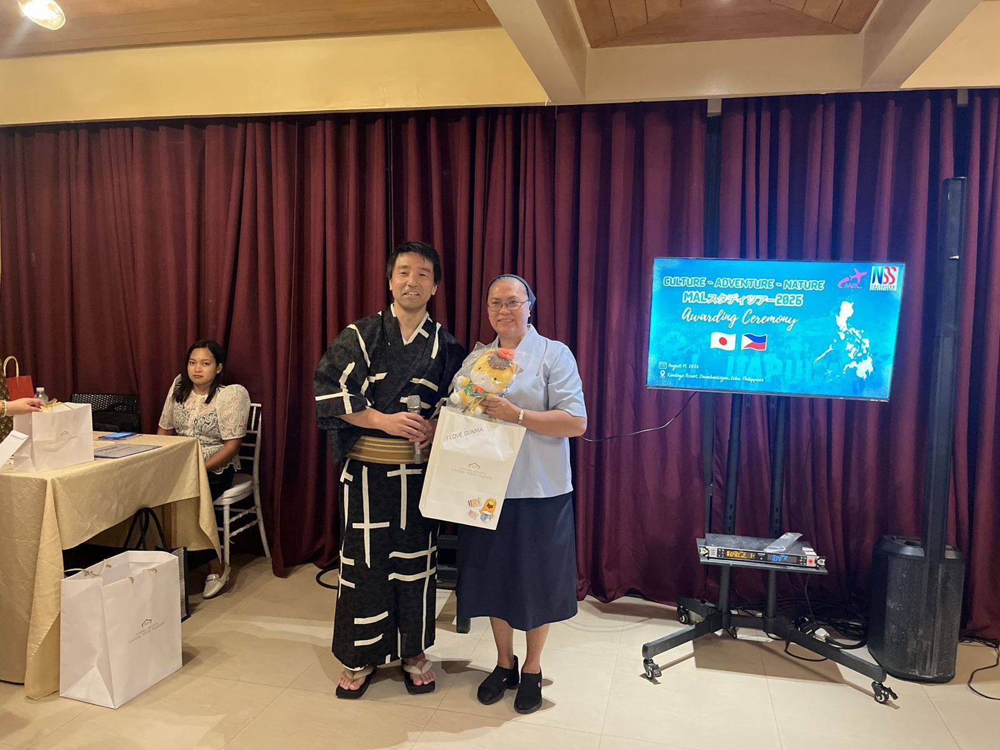
夜に集合し、深夜便でセブへ。
オリエンテーションのあと、マクタン・シュラインと7つの教会をめぐりながらカルカルへ。夜はフィリピン文化のミニ講義。
野菜・きのこの収穫、有機肥料づくり、ティラピア釣り。午後は地元のお菓子工場を見学。
朝3時に出発し、伝統行事「スガット・カバンハワン」へ。午後は靴工場を見学。
オスロブでジンベエザメウォッチング。午後はスミロン島でシュノーケリングと浜辺あそび。
養蜂とハーブ摘み。アルガオで手織り布ヒナブロンの機織り体験をして、セブ市へ。
現地校CICで歓迎式、キャンパスツアー、バディと折り紙。ドライマンゴー工場、マゼランクロス、ナイトマーケットへ。
バディと一緒にパダヨン・カウバン。国立博物館を見学し、夕方は修了式で一人ひとりに修了証を授与。
深夜便でセブを出発し、成田に到着。
毎晩「ふり返り」の時間をとり、その日の学びを言葉にします。※内容は現地の事情により変わることがあります。
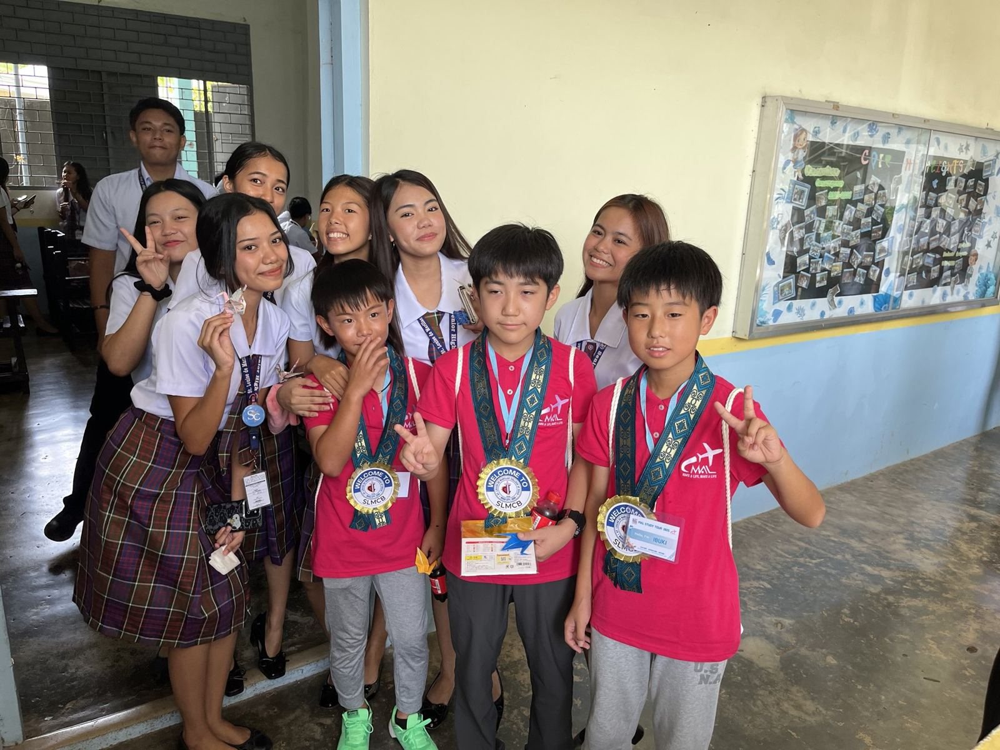
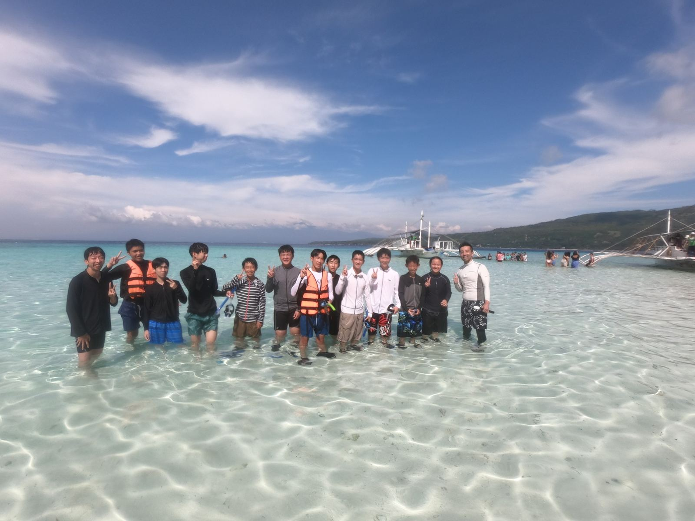
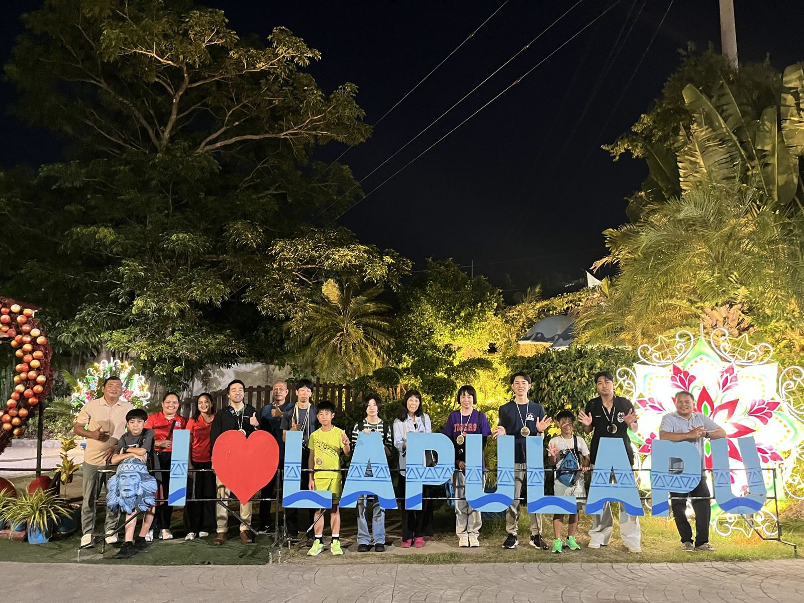
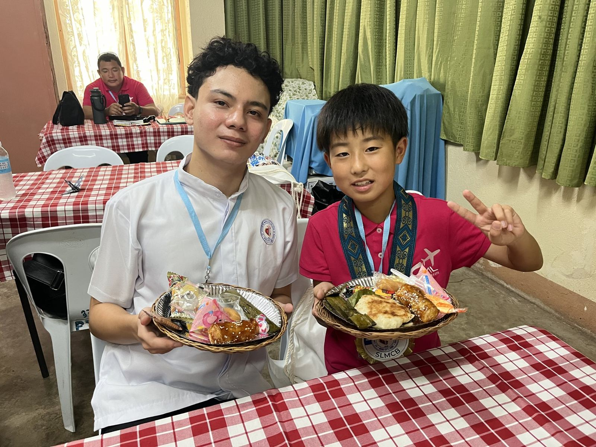
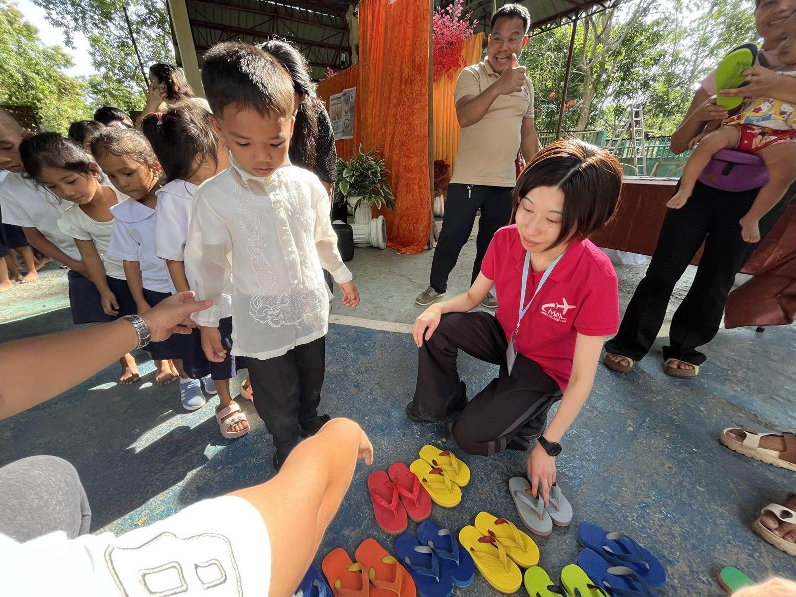
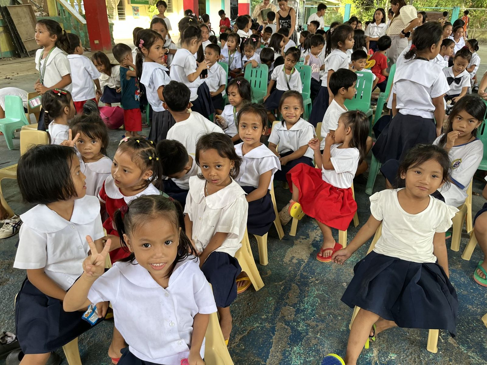
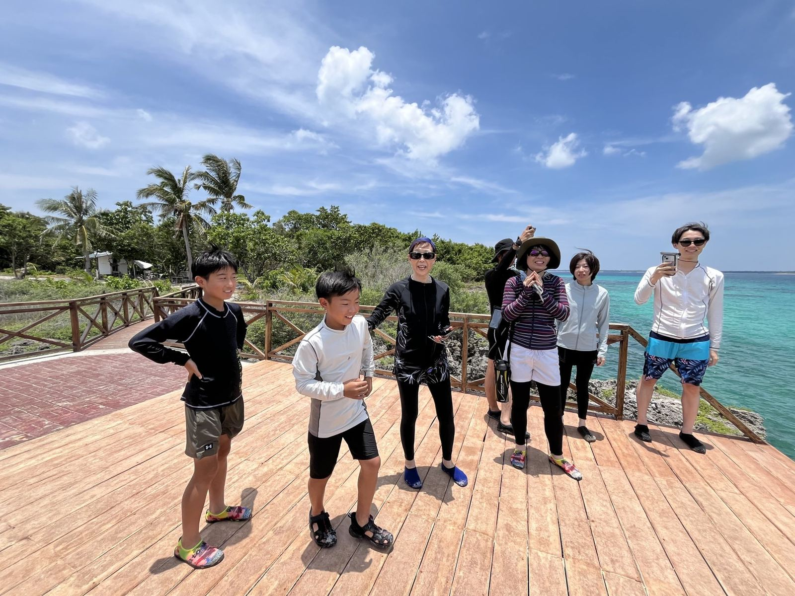
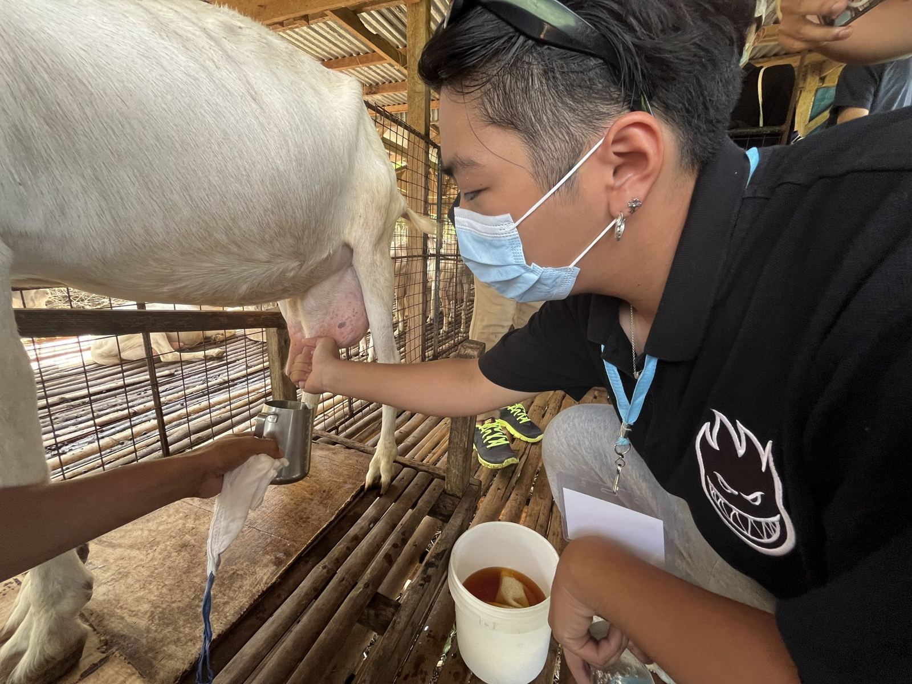
写真は2026年夏のツアー(セブ島北部)などより。マクタン島・セブ市内・農園体験・バディ交流は3月の旅にも含まれます。
一人で海外に行かせることに不安もありましたが、「来年もまた行きたい！」と帰ってきた姿を見て、参加させて本当に良かったと思いました。
保護者の方自分の塾の子どもたちには、10代のうちに世界を肌で感じて、その経験を次の世代づくりに生かしてほしい。こんな体験はほかではできないと、周りに伝えていきたい。
生徒3名とともに参加された塾の先生海の向こうに友達ができるのは、ひとりで観光に行くだけでは味わえないことでした。
初めて飛行機に乗った参加者英語を勉強していてよかった。日本語と同じくらい、英語も話せるようになりたい。
参加者このツアーで本当にレベルアップできた。ふつうの旅行ではできないことばかりでした。
2回目の参加者お金では買えない経験をさせていただき、ありがとうございました。目をキラキラさせて帰ってきました。
リピーターの保護者の方| 日程 | 2027年3月26日(金)〜4月2日(金) 8日間3/25(木)夜 成田空港集合 |
|---|---|
| 場所 | フィリピン・セブ島南部カルカル/オスロブ/スミロン島/アルガオ/セブ市 |
| 対象 | 小学5年生〜大人お子さまだけでもご参加いただけます |
| 定員 | 最少催行10名・最大20名 |
| 含むもの | 宿泊・1日3食・現地での移動・体験費 |
| 含まないもの | 航空券・海外旅行保険航空券は各自ご手配(指定便のご案内と手配をサポート)。保険は加入必須です。 |
| 宿泊 | Cebu Parklane Hotel、Carcar Eco Farm Resort、Bluewater Sumilon Beach Resort |
| 締切 | 早期申込 1月10日(日)/最終締切 1月25日(月)定員になり次第終了 |
塾長の黛が、成田集合から帰国まで全行程を引率します。現地の教育機関NSSと連携してサポートします。
航空券の指定便のご案内、パスポートの確認、15歳未満で保護者が同行しない場合のWEG(入国許可)の書類準備をお手伝いします。
その日の体験を言葉にして、仲間と共有します。「楽しかった」で終わらせない、学びの旅です。
定員は最大20名。一人ひとりの様子を見ながら進めます。
出発前に、持ち物や現地での過ごし方、バディとの交流の準備をします。
最終日の修了式で、一人ひとりに修了証(Certificate)を授与。挑戦を証明として残します。
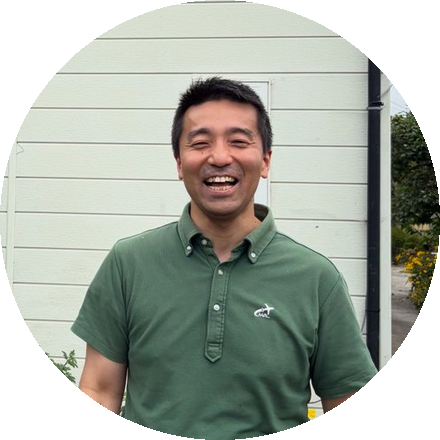
学びの場マル直 塾長。フィリピンのセレマン大学(Silliman University)を卒業し、英検1級を保有。「出会いから学び、学びから世界へ」を合言葉に、2023年から毎年、子どもたちとフィリピンを旅しています。自分自身もまだ旅の途中。一緒にアタリマエを飛び出しましょう。
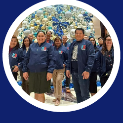
現地パートナー:NSS Education Consultancyはい。小学5年生以上なら、お子さまだけでご参加いただけます。全行程に引率者が同行します。15歳未満で保護者が同行しない場合に必要なWEG(入国許可)の書類準備もサポートします。
大丈夫です。毎年、英語が得意ではない参加者もたくさんいます。伝わらないもどかしさと、伝わったときのうれしさ。その両方が、帰国後の英語学習の原動力になります。
各自でのご手配をお願いしています。みんなで同じ便に乗れるよう、指定便をご案内し、手配のサポートをします。春休みは値上がりしやすいので、お早めの手配がおすすめです。
はい、大人の方もご参加いただけます。親子でのご参加には割引があります。詳しくはLINEでお問い合わせください。
最終締切(1月25日)のあとに、申込状況を見て実施を決定し、ご連絡します。実施しない場合のお支払い済みの参加費の扱いも、ご相談時にご説明します。
今から申請すれば間に合います。残存期間は「滞在日数＋6か月以上」が必要です。取得の流れもご案内します。
ご質問・お申込みは、マル直のLINEから。
早期申込 1/10(日) ・ 最終締切 1/25(月)
塾の先生方へ:生徒さんへのご紹介用の資料をご用意しています。LINEでお気軽にお問い合わせください。